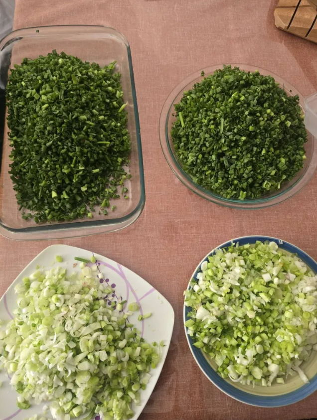
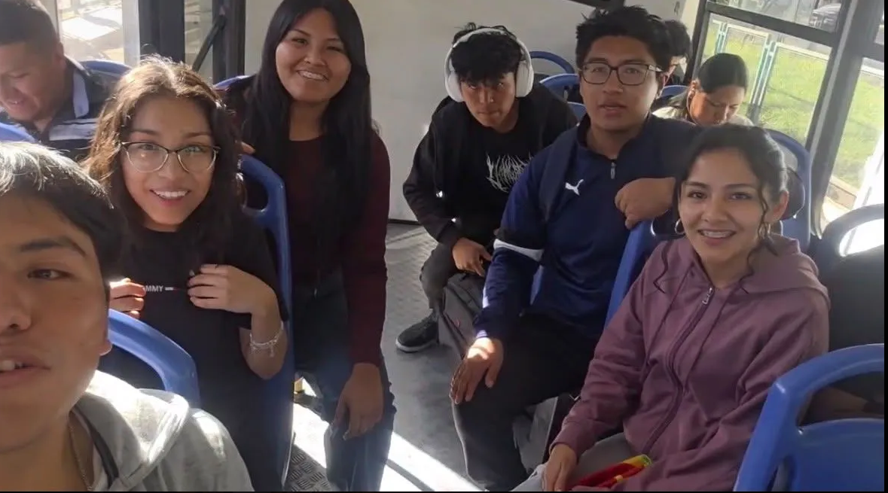
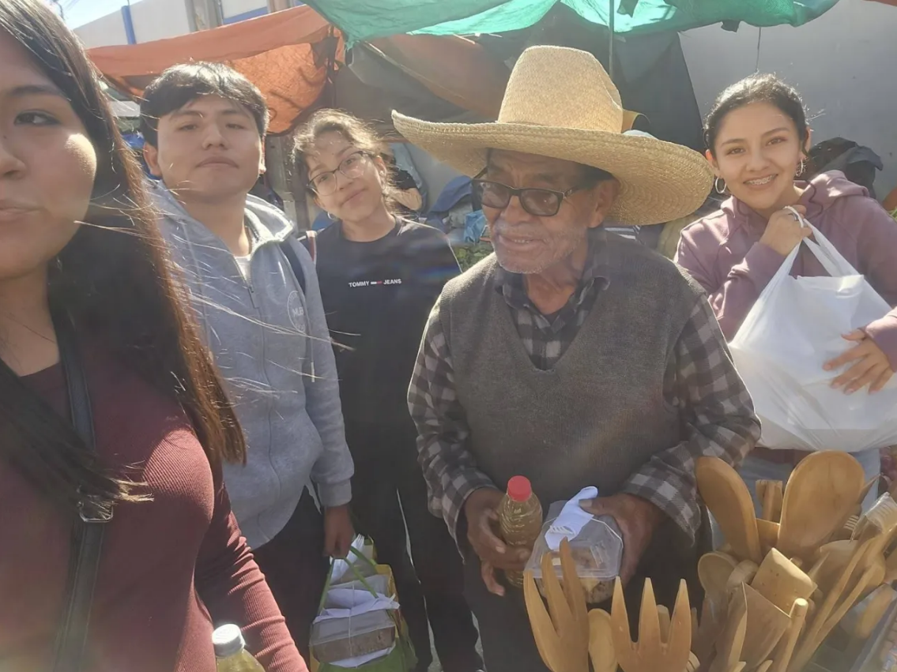

Una mesa compartida
Preparamos y entregamos almuerzos a personas en situación de vulnerabilidad alimentaria.
A veces, cuidar empieza con algo sencillo: compartir un almuerzo, escuchar una historia o regalar un poco de nuestro tiempo.
Somos estudiantes de la Facultad de Medicina de la Universidad Católica San Pablo. A través de nuestro proyecto de Liderazgo Universitario, queremos llevar nuestra vocación de servicio más allá del aula y acercarnos a quienes necesitan compañía y apoyo.

Soñar en grande y poner lo mejor de nosotros al servicio.
Encontrar nuevas formas de ayudar con lo que tenemos.
Estar presentes, escuchar y actuar con respeto.
Hacer que nuestro compromiso continúe y crezca.
Cada jornada es una oportunidad para compartir, aprender y acompañar a nuestra comunidad.

Preparamos y entregamos almuerzos a personas en situación de vulnerabilidad alimentaria.
Visitamos a abuelitos en asilos para escuchar sus historias y compartir momentos con cariño.

Compartimos charlas de conciencia y salud pública con información clara y basada en evidencia.
Promovemos jornadas de salud preventiva y orientación comunitaria con supervisión profesional.
Poner nuestra vocación al servicio de la comunidad mediante acciones solidarias, acompañamiento y educación preventiva.
Construir una red universitaria que permanezca en el tiempo y forme líderes comprometidos con una comunidad más cercana y saludable.
Iremos realizando actividades mes a mes. En esta sección podrás ver nuestras próximas jornadas.
Nos reuniremos para acompañar a los adultos mayores, escuchar sus historias y compartir una jornada llena de cercanía.
Horario, dirección y punto de encuentro: por confirmar con el equipo.
Sábado de la semana antepasada: preparación y entrega de almuerzos para personas en situación de vulnerabilidad alimentaria.
Revisar nuestras actividades previas[INSERTAR LINK 1]
Cada colaboración nos ayuda a comprar alimentos, materiales e insumos para nuestras actividades. Si está dentro de tus posibilidades, puedes ayudarnos a sostener este proyecto en el tiempo.
Por el momento solo contamos con la plataforma Yape.
El equipo agregará aquí el código QR para las donaciones.
¿Tienes una propuesta? ¿Quieres participar? ¿Hay algo que podríamos hacer mejor? Nos gustaría leerte.
Compartimos información preventiva basada en fuentes de la Organización Mundial de la Salud.
Fuentes consultadas el 6 de octubre de 2026. Información educativa: no reemplaza una evaluación médica.
Combina frutas, verduras, legumbres, cereales integrales y fuentes de proteína. Prioriza alimentos poco procesados y limita el exceso de sal y azúcares.
Para mayores de 10 años, la OMS recomienda al menos 400 g diarios de frutas y verduras. Los niños más pequeños tienen necesidades distintas.
Puedes buscar variedad con alimentos accesibles: lentejas, avena, verduras y frutas de temporada.
La atención integral considera las capacidades físicas y mentales, las necesidades sociales y las preferencias de cada persona mayor.
El enfoque ICOPE de la OMS orienta la detección de cambios en las capacidades y la elaboración de planes de atención personalizados.
Durante el voluntariado, escucha y comunica al equipo responsable las necesidades que observes.
El agua segura, el saneamiento y el lavado de manos con jabón ayudan a prevenir enfermedades diarreicas en nuestra comunidad.
Usa agua segura para beber y preparar alimentos, mantén una buena higiene alimentaria y promueve el lavado de manos con jabón.
El acceso a saneamiento adecuado y la educación sobre la transmisión de infecciones también forman parte de la prevención.